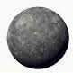
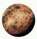
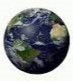
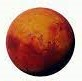
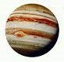
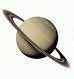
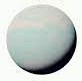
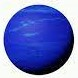

Plantets in our Solar System
Mercury

-
Mercury is the closest planet to the Sun and is also the
smallest planet in our solar system.
-
It has a thin atmosphere and experiences extreme
temperature variations, with scorching hot days and
freezing cold nights.
-
Its surface is covered in craters, and it lacks
significant geological activity.
-
Mercury has been visited by the MESSENGER spacecraft,
which provided valuable insights into its composition
and geology.
Venus

-
Venus is often called Earth's "sister planet" due to its
similar size and composition, but it has a thick, toxic
atmosphere.
-
The atmosphere traps heat through a greenhouse effect,
making it the hottest planet in our solar system, even
hotter than Mercury.
-
Its surface is rocky and has vast volcanic plains,
highland regions, and impact craters.
-
The planet has been explored by various spacecraft,
including the Soviet Venera probes and NASA's Magellan
mission.
Earth

-
Earth is the only known planet with life, featuring a
diverse range of ecosystems and environments.
-
It has a nitrogen-oxygen atmosphere that supports
various life forms and moderates the climate.
-
Surface features include oceans, continents, mountains,
and diverse landscapes.
-
Earth's moon, the Moon, is a natural satellite that has
played a crucial role in Earth's history and
exploration.
Mars

-
Mars is often called the "Red Planet" due to its reddish
appearance, caused by iron oxide on its surface.
-
It has polar ice caps, and evidence suggests that liquid
water might exist beneath its surface.
-
Mars has the largest volcano (Olympus Mons) and the
deepest canyon (Valles Marineris) in the solar system.
-
Rovers like Spirit, Opportunity, and Curiosity have
provided valuable data about Mars' geology and potential
habitability.
Jupiter

-
Jupiter is the largest planet and a gas giant composed
mainly of hydrogen and helium.
-
It has a strong magnetic field and a prominent feature
called the Great Red Spot, a massive storm.
-
Jupiter has a large number of moons, including the four
Galilean moons: Io, Europa, Ganymede, and Callisto.
-
The Juno spacecraft has been studying Jupiter's
composition, gravity field, magnetic field, and polar
magnetosphere.
Saturn

-
Saturn is famous for its stunning ring system, composed
of ice particles and rocky debris.
-
It is a gas giant like Jupiter and has a slightly
smaller size.
-
Saturn's moon Titan has a thick atmosphere and liquid
methane lakes, making it an interesting target for
study.
-
The Cassini-Huygens mission provided detailed
information about Saturn's rings, moons, and atmosphere.
Uranus

-
Uranus is unique for its "sideways" rotation, with its
axis tilted almost 90 degrees.
-
It has a bluish tint due to its methane-rich atmosphere.
-
Uranus has a faint ring system and numerous small moons.
-
Voyager 2 provided the most comprehensive data on Uranus
during its flyby in 1986.
Neptune

-
Neptune is the farthest planet from the Sun and is known
for its vibrant blue color.
-
It has strong winds and a storm called the Great Dark
Spot, similar to Jupiter's Great Red Spot.
-
Neptune's largest moon, Triton, has a retrograde orbit
and a geologically active surface.
-
Voyager 2 also visited Neptune and provided insights
into its atmosphere and moons.